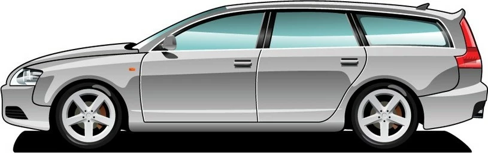

Універса́л (від лат. universalis — «загальний») — тип закритого кузова легкового автомобіля з двома-чотирма рядами сидінь, з трьома або п'ятьма дверима. Ключова ознака універсалу — можливість трансформації задньої частини кузова шляхом складення всіх рядів сидінь, окрім першого. Фактично це фургон зі заскленими боковинками й складаними сидіннями (як у хетчбеки, пасажир фургони, SUVs та мінівен).
| Назва | Porsche Panamera | Audi RS6 |
| об’єм двигуна | 3.6л(V6), 300 к.с | 4.0л, 600 к.с |
| Розхід палива на 100км | 8.0 л | 9.1 л |
Форма універсала має принципову відмінність від седана в тому, що багажне відділення і пасажирський салон об'єднані, дах продовжений до заднього габариту, а в задній стінці кузова є додаткові двері. Сьогодні в багатьох розвинених країнах є загальноприйнятим використання розділової сітки між салоном і багажним відділення універсала для запобігання травмування пасажирів вантажем, що перевозиться, при ДТП. Зокрема, така вимога включена до складу правил Єврокомісії для виробників автомобілів. Від хетчбека універсал відрізняється довжиною заднього обвісу — у хетчбека він короткий, а в універсала — як у базовому седані, або часто довший.